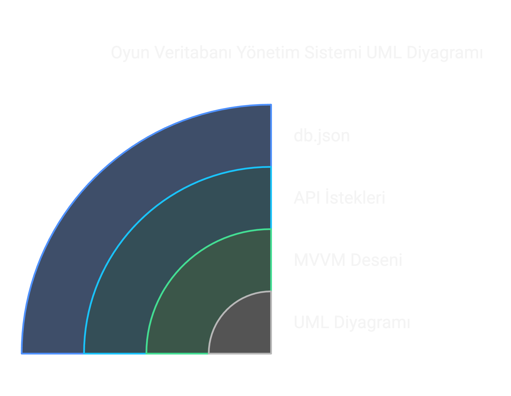
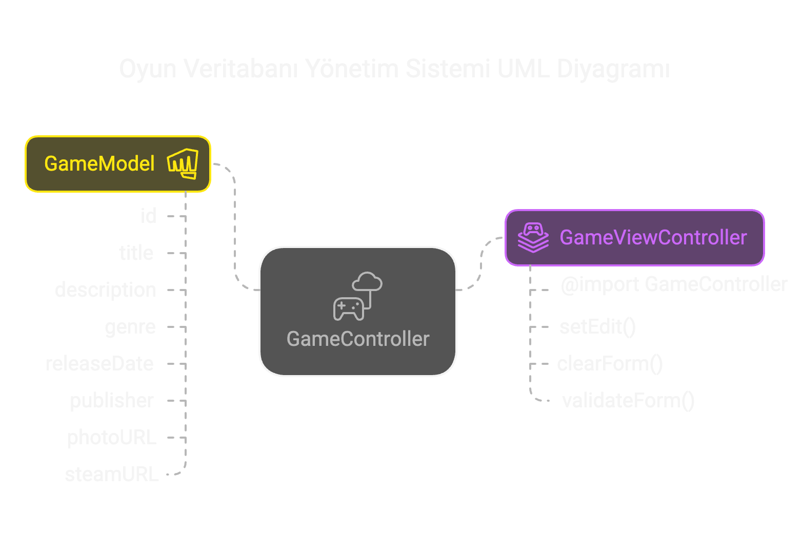
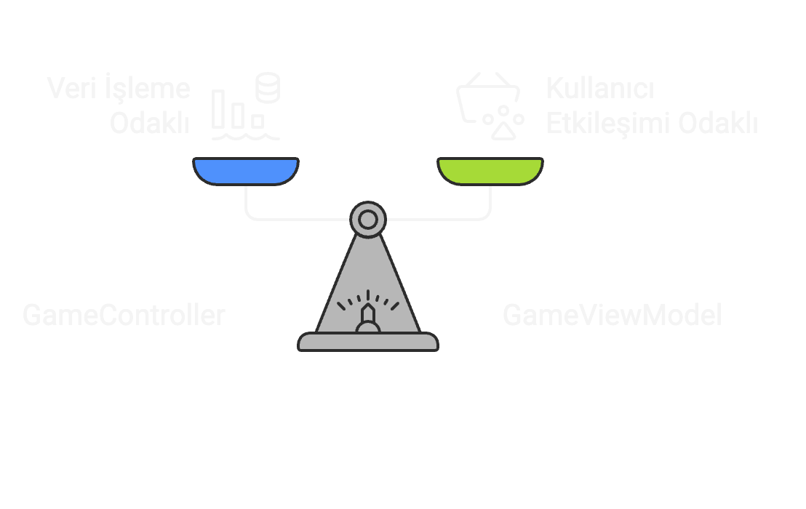

GameVault UML Diyagramı
Bu belge, bir oyun veritabanı yönetim sistemi projesi için uygun bir UML diyagramı oluşturma sürecini açıklamaktadır. Proje, json-server kullanarak verilerin tutulduğu bir db.json dosyası ile API istekleri gerçekleştirmektedir. Kullanıcıların yeni oyun ekleyebilmesi için bir arayüz sunulmakta ve MVVM (Model-View-ViewModel) tasarım deseni uygulanmaktadır. Bu belge, projenin ana bileşenlerini ve bunlar arasındaki ilişkileri görselleştiren bir UML diyagramı sunmaktadır.
Aşağıda, projenin temel bileşenlerini ve ilişkilerini gösteren bir UML diyagramı bulunmaktadır
Projemiz, oyunları yönetmek ve listelemek için tasarlanmış bir web uygulamasıdır. Geliştirme süreci aşağıdaki yaşam döngüsü aşamalarına göre ilerlemektedir:
1. Planlama ve Analiz
Bu aşamada, proje için gerekli olan işlevler ve kullanıcı gereksinimleri belirlendi. Kullanıcıların oyun ekleyebileceği, arayabileceği, düzenleyebileceği ve silebileceği bir sistem oluşturulmasına karar verildi.
2. Tasarım
- UML diyagramları ve veritabanı tasarımı oluşturuldu.
- Kullanıcı arayüzü için wireframe ve mockup'lar hazırlandı.
- Teknoloji yığını olarak JavaScript (Vanilla JS), HTML, CSS, Bootstrap ve JSON-SERVER tercih edildi.
3. Geliştirme
- Frontend: Arayüz, kullanıcı dostu olacak şekilde tasarlandı. Oyun kartları, arama, sıralama ve filtreleme özellikleri geliştirildi.
- Backend: JSON-SERVER kullanılarak CRUD işlemleri gerçekleştirildi. API çağrıları ve veritabanı bağlantıları kuruldu.
4. Test ve Entegrasyon
- Kullanıcı deneyimi test edildi. Hata ayıklama ve düzeltmeler yapıldı.
- Uygulama, farklı tarayıcılarda ve cihazlarda test edildi. Uyumluluk sağlandı.
Açıklamalar
GameModel
GameModel, oyun verilerini temsil eden bir sınıftır. Bu sınıf, oyun adı, kategori, yapımcı firma ve yayın tarihi gibi özelliklere sahiptir.
GameController
GameController, oyun verilerini yöneten bir sınıftır. Bu sınıf, yeni oyun eklemek, oyunları listelemek, oyunları düzenlemek ve oyunları silmek gibi işlemleri gerçekleştirmektedir.
GameViewController
GameViewController, kullanıcı arayüzünü yöneten bir sınıftır. Bu sınıf, kullanıcıdan gelen istekleri karşılamakta ve gerekli işlemleri gerçekleştirmektedir.
Sonuç
Bu belge, GameVault projesinin geliştirme sürecini ve UML diyagramını açıklamaktadır. Proje, kullanıcıların oyun ekleyebileceği, arayabileceği, düzenleyebileceği ve silebileceği bir sistem oluşturmayı hedeflemektedir. Proje, MVVM tasarım deseni kullanılarak geliştirilmiştir ve UML diyagramı ile temel bileşenler ve ilişkiler görselleştirilmiştir.